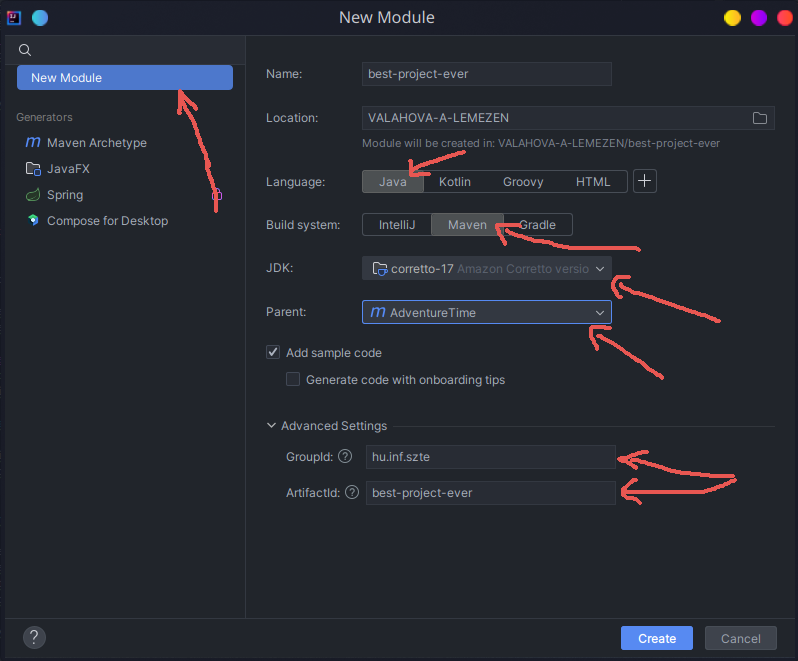

6. gyakorlat - WEB API
A következő anyagrészek során Java servletekkel ismerkedhetünk meg. Itt fogunk némi betekintést nyerni abba,
hogy hogyan is rakhatunk össze egy egyszerűbb webes API-t. Modernebb rendszerek használata esetén, mint pl. egy
Spring Boot Web MVC Framework, már sok itt
látott dolog automatizálható, és nem kell foglalkozzunk vele, azonban ahhoz, hogy nagyjából megérthessük mi történik
ott, ahhoz nem árt egy kicsit alacsonyabb szintű rendszerekkel is foglalkozni egy rövid ideig.
Eddigi projektünket követve egy utazások és látnivalók felvételére készült alkalmazás fogunk elkészíteni.
Packing
Webes alkalmazás esetén ügyeljünk rá, hogy az alkalmazásunk war csomagolási kiterjesztésű legyen.
Ezt a projektünk pom fájljában adhatjuk meg a következő módon:
| <packaging>war</packaging>
|
ahol war = Web Application Archive.
Mivel jelenlegi alkalmazásunk egy annak megfelelő servlet konténerben fog futni,
így ennek megfelelő csomagolást választunk neki, ez a war.
A tag-et ugyanarra a szintre kell elhelyezzük,
mint akár a <groupId/>-t, vagy az <artifactId>-t.
További referenciákért bátran látogassunk el a https://maven.apache.org/pom.html oldalra.
Projekt kezdése
Több mint valószínű, hogy sok-sok kiindulási template közül választhatnánk, mikor új webes projektet kezdünk,
viszont ezek többsége mára már sajnos vagy függőség, vagy webtechnológia szintjén elavultabbá vált, így
itt most egyiket sem fogjuk választani, összeszedjük magunknak, ami kell.
Webes applikációnkhoz készítsünk egy lehetőleg elkülönülő modult a következőképpen:

Fontos, hogy válasszuk ki a megfelelő Parent attribútumot, valamint a groupId-t is úgy válasszuk meg, hogy az
egyezzen a szülő package group azonosítójával (ha jót akarunk).
Servlet konténer
Jelen használt servlet konténerünk egy egyszerű Apache Tomcat lesz.
Röviden, egy olyan szoftverről van szó, amely
a Jakarta EE platform
által specifikált eszközhalmaz egy minimális részét implementálja/tartalmazza.
Erre majd a későbbiek során vissza térünk egy rövid pillanatra, de most elegendő egy rövid kitérőként tekinteni erre.
Fontosak lehetnek azonban a fenti linken található verziózások! Ha fejlesztés során olyan hibákkal találkozunk
futtatás közben, mint pl. egy ClassNotFoundException, akkor gondolhatunk arra, hogy talán elcsúsztunk a verziókkal.
Nagyon erős indikátor lehet erre a hibára, amennyiben implementációnk javax.* csomagokat használ, miközben a tomcat
verziónk pl. ==10.x. Ebben az esetben ugyanis a tomcat implementáció már jakarta.* és NEM javax.* csomagokat keres.
De erről a fenti linkeken többet olvashatunk.
| Servlet Spec |
JSP Spec |
EL Spec |
WebSocket Spec |
Authentication (JASPIC) Spec |
Apache Tomcat Version |
Latest Released Version |
Supported Java Versions |
| 6.1 |
4.0 |
6.0 |
2.2 |
3.1 |
11.0.x |
11.0.0-M18 (alpha) |
17 and later |
| 6.0 |
3.1 |
5.0 |
2.1 |
3.0 |
10.1.x |
10.1.20 |
11 and later |
| 5.0 |
3.0 |
4.0 |
2.0 |
2.0 |
10.0.x (superseded) |
10.0.27 (superseded) |
8 and later |
| 4.0 |
2.3 |
3.0 |
1.1 |
1.1 |
9.0.x |
9.0.87 |
8 and later |
| 3.1 |
2.3 |
3.0 |
1.1 |
1.1 |
8.5.x |
8.5.100 |
7 and later |
| 3.1 |
2.3 |
3.0 |
1.1 |
N/A |
8.0.x (superseded) |
8.0.53 (superseded) |
7 and later |
| 3.0 |
2.2 |
2.2 |
1.1 |
N/A |
7.0.x (archived) |
7.0.109 (archived) |
6 and later (7 and later for WebSocket) |
| 2.5 |
2.1 |
2.1 |
N/A |
N/A |
6.0.x (archived) |
6.0.53 (archived) |
5 and later |
| 2.4 |
2.0 |
N/A |
N/A |
N/A |
5.5.x (archived) |
5.5.36 (archived) |
1.4 and later |
| 2.3 |
1.2 |
N/A |
N/A |
N/A |
4.1.x (archived) |
4.1.40 (archived) |
1.3 and later |
| 2.2 |
1.1 |
N/A |
N/A |
N/A |
3.3.x (archived) |
3.3.2 (archived) |
1.1 and later |
A felhasználhatóság kedvéért a linken található táblázat itt is megjelenik, ám ezt csak óvatosan használjuk!
Az írás pillanatában a Tomcat 11.x-es szoftver még erősen fejlesztés alatt áll, ezért a specifikációk változhatnak,
míg az itt található táblázat nem feltétlenül fog!
Ahhoz, hogy legyen egy ilyen konténerünk, többféleképpen is eljárhatunk.
Régebbi gyakorlatokhoz hasonlóan segíthet ebben egy elég széleskörűen használt plugin,
amely egy beágyazott tomcat szervert fog futtatni számunkra.
1
2
3
4
5
6
7
8
9
10
11
12
13
14
15
16
17
18
19
20
21
22
23
24
25
26
27
28
29
30 | <plugin>
<groupId>org.codehaus.cargo</groupId>
<artifactId>cargo-maven3-plugin</artifactId>
<configuration>
<!-- most egy beágyazott, v10 tomcat-et használunk -->
<container>
<containerId>tomcat10x</containerId>
<type>embedded</type>
</container>
<configuration>
<properties>
<!-- fusson a 8080-as porton! -->
<cargo.servlet.port>8080</cargo.servlet.port>
<!-- low, medium vagy high -->
<cargo.logging>medium</cargo.logging>
</properties>
</configuration>
<deployables>
<deployable>
<groupId>${project.groupId}</groupId>
<artifactId>${project.artifactId}</artifactId>
<type>${project.packaging}</type>
<properties>
<!-- ez azért jó, mert így nem lesz mindenféle default útvonal beállítva -->
<context>/</context>
</properties>
</deployable>
</deployables>
</configuration>
</plugin>
|
Nincs szükség külön tomcat szerver telepítésére, mára már teljesen jó és kijárt utak vannak standalone
webservice-k készítésére. A gyakorlat során valószínűleg ez elegendő, és kényelmesebb is lehet.
Amennyiben életutunk során szükségünk lenne egy külső szerverre való alkalmazás deploy-ra, úgy
ellátogathatunk a régi gyakorlati részekhez.
Pluginok használatára már láttunk példát, evvel is hasonlóképp futtathatjuk alkalmazásunkat,
mint egy javafx alkalmazás esetén.
avagy a projekten belül:
| ./mvnw install && ./mvnw cargo:run -pl webapi
|
parancs segítségével futtathatjuk.
Térjünk rá ezután egy könnyebb útra, az alkalmazásunk indításához. Itt megjegyezzük,
hogy ezen gyakorlatnak nem célja megismertetni a Spring Framework-öt, és annak csodáit,
viszont a webapplikációnk indításához egy igen kellemes eszköz lehet.
| @ServletComponentScan
@SpringBootApplication
public class App {
public static void main(String[] args) {
new SpringApplication(App.class).run(args);
}
}
|
Egy ilyen - effektíve egy soros - Main class segítségével bármely számunkra kedves IDE
használatával is indíthatjuk alkalmazásunkat.
| <dependency>
<groupId>org.springframework.boot</groupId>
<artifactId>spring-boot-starter-web</artifactId>
<version>3.2.4</version>
</dependency>
<dependency>
<groupId>org.apache.tomcat.embed</groupId>
<artifactId>tomcat-embed-core</artifactId>
<version>10.1.20</version>
</dependency>
|
Ehhez erre a két függőségre van szükségünk. Az elsőre a Spring Boot miatt, a másodikra a beágyazott Tomcat
szerver miatt, melyet a keretrendszerünk ebben az esetben elindít számunkra. Egy beágyazott Tomcat szerver
indítása nem túl veszélyes feladat, viszont jelenlegi gyakorlati anyagunk erre most nem terjed ki,
így marad a plugin, vagy egy Spring Boot.
Modellek
A teljesség igénye nélkül, itt most megjelenítünk egy pár megvalósítás szempontjából fontosabb
modell osztályt, melyek szükségesek lehetnek az API pontokkal való kommunikációhoz.
A konkrét utazások reprezentációjára szolgáló objektumok:
1
2
3
4
5
6
7
8
9
10
11
12
13
14
15 | @NoArgsConstructor
@AllArgsConstructor
@Getter
@Setter
@ToString
public class Sight {
private Long id;
private String name;
private BigDecimal price;
private Integer openingHour;
private Integer closingHour;
private String description;
private Integer popularity;
}
|
Egy create operáció után adott válasz formátuma:
| public record InsertId(Object id) {
}
|
Ebben az esetben az Object, mint ID minden esetben Long típusú lesz, de meghagytuk a lehetőséget
esetlegesen más típusú elsődleges kulcsoknak is.
Adatbázis módosítás után adott válasz (Update, vagy Delete).
| public record ModifiedRows(int affectedRows) {
}
|
Egyes preferenciák beállítására szolgáló kérés formátuma.
| public record Preferences(
BigDecimal minPrice,
BigDecimal maxPrice,
Integer minPopularity) implements Serializable {
}
|
| public record Message(String message) {
}
|
Servletek
A Java Servletek valamilyen féle alkalmazás-szerveren futó programok, melyeket egy köztes rétegként képzelhetünk el
kliensek kérései (pl. HTTP), valamint alkalmazásunk/alkalmazásaink között.
Servleteink során a következő import-okat szinte biztosan használni fogjuk:
| import jakarta.servlet.ServletConfig;
import jakarta.servlet.annotation.WebServlet;
import jakarta.servlet.http.HttpServlet;
import jakarta.servlet.http.HttpServletRequest;
import jakarta.servlet.http.HttpServletResponse;
|
Ők a következő függőségtől származnak:
| <dependency>
<groupId>jakarta.servlet</groupId>
<artifactId>jakarta.servlet-api</artifactId>
<version>6.0.0</version>
<!-- Figyeljük meg a függőség scope-ját! -->
<scope>provided</scope>
</dependency>
|
Ennél a pontnál kalandozzunk vissza az előző részek tartalmához.
Említettük, hogy az alkalmazásunkat futtató servlet konténer (jelenleg Tomcat) implementál
bizonyos specifikációkat. Adott konténer kiválasztása esetén a fejlesztő felelőssége,
hogy utánajárjon annak, hogy a Jakarta EE specifikációk közül melyek azok, amelyeket
tartalmaz a választott szoftver.
A provided scope annyit mond most itt nekünk, hogy az evvel járó csomagokat elegendő
fordítási időben behúzni, ugyanis ez majd a futás során valahonnan elérhető lesz. Ez
a valahonnan jelenleg a Tomcat szoftvertől lesz, ő fogja biztosítani nekünk a szükséges
jakarta osztályokat.
Kezdetben vegyük például egy egyszerű servlet elkészítését.
Teapot
Egy teás kanna!
1
2
3
4
5
6
7
8
9
10
11
12
13
14
15
16
17
18
19
20
21
22
23
24
25
26
27
28
29
30
31 | // Ez egy fontos annotáció, ugyanis ennek segítségével
// specifikálhatjuk, hogy milyen útvonalon fog élni az
// adott servletünk. Ha a HOST után, (bármely kedvenc
// http kliensünket (vagy itt most épp akár böngészőnket)
// használva) az itt leírt útvonalat adjuk meg, akkor ez
// a servlet fog reagálni a kéréseinkre.
@WebServlet(urlPatterns = "/teapot")
// Az is nagyon fontos továbbá, hogy osztályunk a HttpServlet
// class-ból öröklődjön.
public class TeapotServlet extends HttpServlet {
// Itt a GET kérésekre való reagálási hajlamát adhatjuk meg
@Override
protected void doGet(HttpServletRequest req, HttpServletResponse resp) throws IOException {
// Megadjuk a válasz formátumát. Most pl. text/html, de
// ebben az esetben lehetne text/plain is. Van még jó sok,
// nézzük meg őket!
resp.setContentType(ContentType.TEXT_HTML.getMimeType());
// Nem kötelező, de specifikálhatjuk a karakter kódolást is.
resp.setCharacterEncoding(StandardCharsets.UTF_8.name());
// Itt ez most egy teapot status. Általában OK == 200,
// vagy hasonlókat fogunk inkább látni.
// https://developer.mozilla.org/en-US/docs/Web/HTTP/Status/418
resp.setStatus(418); // Nincs beépített teapot válasz :(
// megfogjuk a response writer-t
// aztán írunk vele valami választ
// most csak annyit, hogy teapot vagyok
resp.getWriter().println("I am a teapot");
}
}
|
A gyakorlat során főként POST kérésekkel fogunk
foglalkozni. Bizonyos esetekben akár használhatnánk GET
kéréseket is, azonban nem igazán akarunk olyan kéréseket tervezni, melyeknek fontos lenne a cache-elése, továbbá
amennyiben kiegészítenénk az alkalmazásunkat olyan módon, hogy az valamilyen féle autentikációt is tartalmazzon,
úgy megint csak oda jutnánk, hogy az egyes API endpoint-okat POST kérésekkel kellene megvalósítsuk.
Ilyen módon diplomatikusabb tehát, ha maradunk a POST kéréseknél.
A fenti egyszerű esetben viszont, mivel olyanféle view adatokat közlünk a klienssel,
így már inkább indokolt egy GET request használata.
Request
És hogy ezt hogyan is érjük el? Próbáljuk ki először egy kissé fapados módon!
A következőkben, és itt is feltételezzük, hogy az alkalmazásunk a 8080-as porton fut.
Példa cURL segítségével a teapot servlet-hez:
| curl http://localhost:8080/teapot
|
ugyanez fetch api használatával:
| fetch("http://localhost:8080/teapot"
).then(resp => {
return resp.text();
}).then(data => {
console.log(data);
})
|
Read
Készítsük el elsőre a feladatunkhoz tartozó első servletként, a read servletet.
Őt arra fogjuk használni, hogy az éppen megvalósított perzisztens tárhelytől adatokat kérjünk le.
Mint a többi servlet megvalósítását, ezt is érdemes egy külön, pl. servlet csomag alá helyezni.
1
2
3
4
5
6
7
8
9
10
11
12
13
14
15
16
17
18
19
20
21
22
23
24
25
26
27
28
29
30
31
32
33
34
35
36
37
38
39
40
41
42
43
44
45
46
47
48
49
50
51
52
53
54
55
56
57
58
59
60
61
62
63
64
65
66
67
68
69
70
71
72
73 | // Jelen servletünk több URL-t is elfogad, read és list alias alatt is hívhatjuk.
@WebServlet(urlPatterns = {"/api/sight/read", "/api/sight/list"})
public class SightReadServlet extends HttpServlet {
// data access object, mellyel az utazásainkat kezelhetjük
private Dao<Long, Sight> dao;
// opcionális
// validációra szolgáló factory, mely validációt kézzel is elvégezhetünk
private ValidatorFactory validatorFactory;
// egy opcionális logger
// nem feltétele egy működő servletnek
private final Logger logger = LoggerFactory.getLogger(getClass());
// Az init metódus most nekünk csak a DataSource beszerzése miatt fontos,
// azonban ebben a példában itt most található egy validátor is.
@Override
public void init(ServletConfig config) {
// Honnan jön ez itt??? Később látni fogjuk!
// Itt természetesen elegendő lehetne egy singleton-tól elkérni ezt,
// de ha hosszútávon jót akarunk magunknak, akkor singleton-t csak akkor
// alkalmazunk ha abszolút muszáj, vagy indokolt.
var dataSource = (DataSource) config.getServletContext().getAttribute("ds");
dao = new SightJooqDao(dataSource, SQLDialect.SQLITE);
validatorFactory = (ValidatorFactory) config.getServletContext().getAttribute("val");
}
@Override
protected void doPost(HttpServletRequest req, HttpServletResponse resp) throws IOException {
// Adott metódusaink belépésekor rögtön specifikálhatjuk is a válaszunk formátumát!
resp.setContentType(ContentType.APPLICATION_JSON.getMimeType());
// állíthatunk karakter kódolást is --> pl. UTF-8
resp.setCharacterEncoding(StandardCharsets.UTF_8.name());
// Az alap státusz kódunk egy OK (200) lesz.
resp.setStatus(HttpStatus.SC_OK);
// kérünk egy json szerializáló példányt
var gson = JsonSupport.create();
// beolvassuk a request body-t
var reqModel = gson.fromJson(req.getReader(), ReadSightReq.class);
var validator = validatorFactory.getValidator();
Set<ConstraintViolation<ReadSightReq>> valResult = new HashSet<>();
// amennyiben van request model, úgy validáljuk azt
if (reqModel != null) {
valResult = validator.validate(reqModel);
}
// opcionális: logolás
valResult.forEach(el -> logger.error(ValidationLog.createLog(el)));
// Amennyiben a validáció hibába, vagy hibákba ütközött, abban az esetben
// szeretnénk ha a servlet pl. egy BAD_REQUEST (400) hibakóddal jelezné
// problémáját. Amennyiben módunk van rá adhatunk némi információt is evvel
// kapcsolatban, pl. egy error message formájában.
if (!valResult.isEmpty()) {
resp.setStatus(HttpStatus.SC_BAD_REQUEST);
resp.getWriter().println(gson.toJson(new Error(valResult.stream()
.map(ValidationLog::createLog)
.collect(Collectors.joining("\n")))));
return;
}
// Ha a kérés üres volt, akkor csak szimplán lekérjük az összes rekordot,
Iterable<Sight> models;
if (reqModel == null) {
models = dao.findAll();
}
// máskülönben pedig szűrünk az adott kérésben szereplő modell szerint.
else {
models = dao.findAllByCrit(ConversionSupport.toModel(reqModel));
}
var modelList = StreamSupport.stream(models.spliterator(), false).toList();
resp.getWriter().println(gson.toJson(modelList));
}
}
|
Megvalósított servleteink esetén talán az egyik legfontosabb lépés a válasz írása.
Itt és a következőkben egy egyszerűen használható, és népszerű json parser csomagot használunk:
gson
További infókért nézzük meg a JSON szekciót.
Ezen kívül látható egy ContentType, egy HttpStatus, valamint egy StandardCharsets
beállítás is. Az első kettő esetben a
| <dependency>
<groupId>org.apache.httpcomponents</groupId>
<artifactId>httpcore</artifactId>
<version>4.4.16</version>
</dependency>
|
csomagot használtuk fel. A HttpStatus esetében használható a jakarta.servlet-api által szolgáltatott
HttpServletResponse is. Használatukat tekintve, a jelenlegi szempontjaink alapján egyezőnek tekinthetők, azonban
megjegyezzük, jelenleg csupán a kellemesebb olvashatóságot segítik elő (no magic variables), de érdemben
ekvivalensek egy beégetett számmal/stringgel.
! Note !
Itt nem győzzük hangsúlyozni, hogy a kért válaszok formátuma nagyon fontos API tervezése esetén.
Amennyiben ez eltér a megrendeléstől, úgy a ráépülő applikációk egyike sem fogja érteni a
szerver által küldött válaszokat, itt nincs "pardon". Ha egy adott API endpoint egy alma és
egy kukac mezőkkel rendelkező JSON-t vár, pl. String és Integer típusokat feltételezve,
akkor amennyiben nem olvasható az adott válasz ebben az adott formátumban, úgy az egész mehet a levesbe!
Request
Példa az összes rekord lekérésére:
| curl --request POST http://localhost:8080/api/sight/list
|
Ugyanez szűréssel:
| curl --header "Content-Type: application/json" --data '{"id": 3}' --request POST http://localhost:8080/api/sight/list
|
Fetch API:
| fetch("http://localhost:8080/api/sight/list", {
"method": "post",
"body": JSON.stringify({"name": "a"}),
"headers": { "Content-Type": "application/json" }
}).then(
resp => resp.json()
).then(data => {
console.log(data);
})
|
Create
A create servletünk nagyon hasonló alapokra épül, mint akár a read, csupán a doPost
megvalósításában lesznek eltérések. Ezen kívül természetesen az is különböző lesz,
hogy milyen url-pattern alatt fogjuk elérni, melyet ne feledjünk el a megfelelő
annotáció segítségével beállítani. Ezen URL-ek esetünkben pl. lehetnek a következők:
"/api/sight/create", "/api/sight/insert", "/api/sight/add"
1
2
3
4
5
6
7
8
9
10
11
12
13
14
15
16
17
18
19
20
21
22
23
24
25
26
27
28 | @Override
private void doPost(HttpServletRequest req, HttpServletResponse resp) throws IOException {
resp.setContentType(ContentType.APPLICATION_JSON.getMimeType());
resp.setCharacterEncoding(StandardCharsets.UTF_8.name());
resp.setStatus(HttpStatus.SC_CREATED);
var gson = JsonSupport.create();
// első különbség az elfogadott kérés típusában
var reqModel = gson.fromJson(req.getReader(), NewSightReq.class);
var validator = validatorFactory.getValidator();
var valResult = validator.validate(reqModel);
valResult.forEach(el -> logger.error(ValidationLog.createLog(el)));
if (!valResult.isEmpty()) {
resp.setStatus(HttpStatus.SC_BAD_REQUEST);
resp.getWriter().println(gson.toJson(new Error(valResult.stream()
.map(ValidationLog::createLog)
.collect(Collectors.joining("\n")))));
return;
}
// request modell átalakítása tényleges db modellé
// gyakorlatilag a mezők megfelelő értékeinek másolása történik
var dbModel = ConversionSupport.toModel(reqModel);
// adott model tényleges mentése az adatbázisba
dao.save(dbModel);
// json konvertálás -> "{"id": dbModel::id}"
resp.getWriter().println(gson.toJson(new InsertId(dbModel.getId())));
}
|
Adott esetben akár be is olvashatnánk minden kérést egy adott osztályba, esetünkben a Sight
osztályba, azonban vegyük észre, hogy itt most egy NewSightReq típust használunk arra, hogy
a kliens kérését beolvassuk. Ez az osztály pl. a következőképpen nézhet ki:
1
2
3
4
5
6
7
8
9
10
11
12
13
14
15
16
17
18
19
20
21
22
23
24
25
26 | @NoArgsConstructor
@AllArgsConstructor
@Getter
@Setter
@ToString
public class NewSightReq {
@NotBlank
private String name;
@PositiveOrZero
@NotNull
private BigDecimal price;
@Min(0)
@Max(23)
@NotNull
private Integer openingHour;
@Min(0)
@Max(24)
@NotNull
private Integer closingHour;
private String description;
@Min(0)
@Max(10)
@NotNull
private Integer popularity;
}
|
Itt a jakarta.validation-api-t használjuk, mint függőség.
| <dependency>
<groupId>jakarta.validation</groupId>
<artifactId>jakarta.validation-api</artifactId>
<version>3.0.2</version>
</dependency>
|
Tárolásra és kérésre alkalmas osztályainkat nagyon sok esetben érdemes lehet szétválasztani.
Már csak azért is, mert egy kérés során (mint itt is) nem feltétlenül várjuk el ugyanazon
paramétereket. Továbbá a validációja is elkülönülhet annak, hogy mit tekintünk valid inputnak,
valamint annak is, hogy adatbázis mentéskor mit tekintünk egy érvényes rekordnak. Gondoljunk
például csak bele a UNIQUE megkötésekre. Ezt bevitelkor nem tudjuk, és nem is akarjuk
ellenőrizni, csupán a tényleges adatbázisba való mentés lépésekor.
Request
Példa egy create kérésre cURL használatával:
| curl -header "Content-Type: application/json" --data '{"name": "sth new", "price": 93.15, "openingHour": 6, "closingHour": 18, "description": "A long description to show you how good this sight is.\nBe prepared!"; "popularity": 7}' --request POST http://localhost:8080/api/sight/create
|
Update
Update esetén szinte ugyanaz történik, mint egy create esetén, csupán arra kell figyeljünk, hogy a
megengedett URL-eket ennek a servletnek megfelelően adjuk meg. Pl. api/sight/update, és/vagy
api/sight/refresh legyen.
Ezen kívül természetesen egy kicsit más, de nagyon hasonló a beolvasott kérés formátuma is, amely
itt most ténylegesen csak annyiban különbözik, hogy az UpdateSightReq class tartalmaz egy id
mezőt is. Továbbá szükséges még a megfelelő dao::updateById metódusát is meghívni.
Válaszunk pedig egy affectedRows nevű mezőt tartalmaz, mely a módosított rekordok számosságát
hivatott jelölni.
1
2
3
4
5
6
7
8
9
10
11
12
13
14
15
16
17
18
19
20
21
22
23
24
25
26
27
28 | @Override
private void doPost(HttpServletRequest req, HttpServletResponse resp) throws IOException {
resp.setContentType(ContentType.APPLICATION_JSON.getMimeType());
resp.setCharacterEncoding(StandardCharsets.UTF_8.name());
resp.setStatus(HttpStatus.SC_OK);
var gson = JsonSupport.create();
// update request beolvasása
var reqModel = gson.fromJson(req.getReader(), UpdateSightReq.class);
var validator = validatorFactory.getValidator();
var valResult = validator.validate(reqModel);
valResult.forEach(el -> logger.error(ValidationLog.createLog(el)));
if (!valResult.isEmpty()) {
resp.setStatus(HttpStatus.SC_BAD_REQUEST);
resp.getWriter().println(gson.toJson(new Error(valResult.stream()
.map(ValidationLog::createLog)
.collect(Collectors.joining("\n")))));
return;
}
// request modell átalakítása tényleges db modellé
// gyakorlatilag a mezők megfelelő értékeinek másolása történik
var dbModel = ConversionSupport.toModel(reqModel);
// db update
var affectedRows = dao.updateById(reqModel.getId(), dbModel);
// majd válasz írása
resp.getWriter().println(gson.toJson(new ModifiedRows(affectedRows)));
}
|
Láthatjuk, hogy gondosabban megtervezett servletek esetén nagyon minimális változtatás
is elég lehet különböző funkciók megvalósításához. Ugyanakkor, ez jelen pillanatban másra
is adhat utalást. Vegyük észre, hogy ez a servlet, és az előzőek esetén is igaz, hogy
nagyon kevés tényleges funkcionalitással rendelkeznek egy ilyen egyszerű esetben.
Ha nagyon fapadosak akarunk lenni, akkor az egész doPost redukálható lenne a következő
lényegi sorokra:
| @Override
private void doPost(HttpServletRequest req, HttpServletResponse resp) throws IOException {
var reqModel = new Gson().fromJson(req.getReader(), UpdateSightReq.class);
resp.getWriter().println(new Gson().toJson(new ModifiedRows(
dao.updateById(reqModel.getId(), ConversionSupport.toModel(reqModel)))));
}
|
Ez elmondható a többi servletünkről is. Természetesen fontos a validáció, de ha esetleg hajlamot
éreznénk a részletekben való elveszéshez, akkor gondoljunk csak a fenti megvalósításra.
Gyakorlásképpen, és egy teljesen ideális világot feltételezve, írjuk át az összes eddigi servletet
ilyen módon!
Request
| curl -header "Content-Type: application/json" --data '{"id": 3, "name": "change me", "price": 24.42, "openingHour": 12, "closingHour": 20, "description": "Come here kind Sir!"; "popularity": 8}' --request POST http://localhost:8080/api/sight/update
|
Delete
Delete esetében nem is időzünk már sokat, ő már tényleg szinte ugyanaz, mint egy update.
1
2
3
4
5
6
7
8
9
10
11
12
13
14
15
16
17
18
19
20
21
22 | @Override
private void doPost(HttpServletRequest req, HttpServletResponse resp) throws IOException {
resp.setContentType(ContentType.APPLICATION_JSON.getMimeType());
resp.setCharacterEncoding(StandardCharsets.UTF_8.name());
resp.setStatus(HttpStatus.SC_OK);
var gson = JsonSupport.create();
var reqModel = gson.fromJson(req.getReader(), DeleteSightReq.class);
var validator = validatorFactory.getValidator();
var valResult = validator.validate(reqModel);
valResult.forEach(el -> logger.error(ValidationLog.createLog(el)));
if (!valResult.isEmpty()) {
resp.setStatus(HttpStatus.SC_BAD_REQUEST);
resp.getWriter().println(gson.toJson(new Error(valResult.stream()
.map(ValidationLog::createLog)
.collect(Collectors.joining("\n")))));
return;
}
var affectedRows = dao.deleteById(reqModel.getId());
resp.getWriter().println(gson.toJson(new ModifiedRows(affectedRows)));
}
|
Request
| curl -header "Content-Type: application/json" --data '{"id": 3}' --request POST http://localhost:8080/api/sight/delete
|
Servlet context
Történetünk elején láthattuk, hogy kaptunk egy pár ingyen DataSource, valamint
ValidatorFactory objektumot is. De honnan is jöttek ezek? Applikációnk indulásakor van
egy fontos event, melyre listener-t is köthetünk Ez pedig a
ServletContextListener::contextInitialized
event. Egyéb event listenerekkel a gyakorlat során valószínűleg nem fogunk találkozni, de
röviden feladatuk annyiban ki is merül, hogy megfelelő eventekre specifikálhatunk velük egy
adott munkavégzési folyamatot. Azaz, "ha jön egy ilyen event, akkor hajtsd végre ezt az action-t".
Egy ilyen listener-t például a következőképpen implementálhatunk:
1
2
3
4
5
6
7
8
9
10
11
12
13
14
15
16
17
18
19
20
21
22
23
24
25
26
27
28
29
30
31
32
33
34
35
36
37
38
39
40
41
42
43
44
45 | @WebListener
public class ContextListener implements ServletContextListener {
// ő lesz majd a DataSource objektumunk az alkalmazásunk pusztulásáig
private final DataSource dataSource;
// szintén az alkalmazásunk végéig él, és a requestek validálásáért szolgál
private final ValidatorFactory validatorFactory;
public ContextListener() {
// final mezők létrehozása
dataSource = new DataSourceFactory().getDataSource();
validatorFactory = Validation.buildDefaultValidatorFactory();
}
@Override
public void contextInitialized(ServletContextEvent sce) {
var dbSupport = new SqlDbSupport(dataSource);
//var authSupport = new CookieAuthSupport(new AuthService(new UserJooqDao(dataSource, SQLDialect.SQLITE)), null, null);
var authSupport = new NopAuthenticator();
// inicializálunk minden "globális" változót, ami csak kell
// ezeket majd BÁRMELY servlet-ből elérhetjük
sce.getServletContext().setAttribute("ds", dataSource);
sce.getServletContext().setAttribute("auth", authSupport);
sce.getServletContext().setAttribute("val", validatorFactory);
// memory db init
dbSupport.createTablesIfNotExist();
dbSupport.insertIntoTables();
}
@Override
public void contextDestroyed(ServletContextEvent sce) {
// amennyiben a DataSource closable, úgy zárjuk azt be
if (dataSource != null && dataSource instanceof AutoCloseable) {
try {
((AutoCloseable) dataSource).close();
} catch (Exception e) {
// micsoda??? valami eléggé félrement
throw new RuntimeException(e);
}
}
if (validatorFactory != null) {
validatorFactory.close();
}
}
}
|
Ez a class pedig mehet is egy listener package alá.
JSON string kezelés
Ahhoz, hogy használhassuk a kiszemelt csomagunkat, először szeretnénk behúzni azt, mint függőség.
| <dependency>
<groupId>com.google.code.gson</groupId>
<artifactId>gson</artifactId>
<version>2.10.1</version>
</dependency>
|
A gson package segítségével objektumokat fogunk tudni egészen egyszerű módon JSON kompatibilis
stringekké konvertálni.
Például:
| class Message {
public final String msg;
}
...
new Gson().toJson(new Message("hello there"));
// >>
// "{\"msg\": \"hello there\"}"
|
Természetesen előfordulhat, hogy olyan objektumokat is kell szerializálni,
melyeket alapból nem ismer a gson package. Ekkor lehetőségünk van létrehozni saját osztályokat,
melyek adott objektumok beolvasását, illetve kiírását végzik.
Lássunk erre példát alább egy egyszerű LocalDate esetén.
1
2
3
4
5
6
7
8
9
10
11
12
13
14
15
16
17
18
19
20
21
22
23
24
25
26
27
28
29
30
31
32
33
34
35
36
37
38
39
40
41 | // Segítségével LocalDate objektumot fogunk egy egyszerű stringé alakítani.
// Az interface felülírandó metódusa a `serialize` lesz.
class LocalDateSerializer implements JsonSerializer<LocalDate> {
@Override
public JsonElement serialize(LocalDate date, Type typeOfSrc, JsonSerializationContext context) {
// a datetime stringek kövesék az ISO formátumot!
return new JsonPrimitive(date.format(DateTimeFormatter.ISO_LOCAL_DATE));
}
}
// Segítségével LocalDate objektumot fogunk parsolni egy stringből.
// Az interface felülírandó metódusa a `deserialize`.
class LocalDateDeserializer implements JsonDeserializer<LocalDate> {
@Override
public LocalDate deserialize(JsonElement jsonElement, Type type, JsonDeserializationContext context) throws JsonParseException {
// json elem beolvasása stringként
String string = jsonElement.getAsString();
if (string.length() > 20) {
// a datetime string tartalmaz időzóna információt is
ZonedDateTime zonedDateTime = ZonedDateTime.parse(string);
return zonedDateTime.toLocalDate();
}
// egyszerű string parse
return LocalDate.parse(string);
}
}
...
// Ezt pl. elhelyezhetjük egy saját utility class-ban.
// Lényegében ő egy kiegészített képességekkel rendelkező Gson objektumot fog létrehozni.
new GsonBuilder()
.setPrettyPrinting()
.registerTypeAdapter(LocalDate .class, new LocalDateSerializer())
.registerTypeAdapter(LocalDate .class, new LocalDateDeserializer())
.create();
|
Viszonykövetés, sütik
Egy újabb fontosabb, és jelenleg talán utolsó témakörünk valamilyen féle viszonykövetés.
Valószínűleg mindenkinek ismerősek lehetnek már a cookie-k, melyeket most felhasználói
preferenciák tárolására fogunk használni. A cookie-k úgy általában is jellemzően valamiféle
felhasználói információt tartalmaznak, melyeket adott webszerver készít el egy kliens
számára, melyek aztán kliens oldalon tárolódnak! Egy session-el ellentétben ez egy fontos
különbség, ugyanis session-t használva a szerverünk megszűnne szigorú értelemben vett
RESTful API-nak lenni. REST esetén ui. egy kitételünk, hogy a
webszerver úgymond állapottól mentes (stateless) legyen, azaz szerveroldalon ne tároljon
semmiféle információt előző kérésekről/válaszokról. Minden kérés önmagában is végrehajtható
kell legyen, rendelkeznie kell a kérés elvégzéséhez szükséges összes információval (pl. user
adatok). A cookie-k kliens oldalon tárolódnak, így ezt a kérdéskört meg is oldják.
A sütiken kívül természetesen léteznek ennek megoldására egyéb webtechnológiák is,
de itt most egyszerűségüknél fogva a cookie-kat választjuk.
Lássuk hogyan is készíthetünk egy cookie gyártó servletet!
1
2
3
4
5
6
7
8
9
10
11
12
13
14
15
16
17
18
19
20
21
22
23
24
25
26
27
28
29 | // urlPatterns --> /api/pref, /api/preferences
@Override
private void doPost(HttpServletRequest req, HttpServletResponse resp) throws ServletException, IOException {
resp.setContentType(ContentType.TEXT_PLAIN.getMimeType());
resp.setStatus(HttpStatus.SC_NO_CONTENT);
var gson = new Gson();
var pref = gson.fromJson(req.getReader(), Preferences.class);
var validator = validatorFactory.getValidator();
var valResult = validator.validate(pref);
valResult.forEach(el -> logger.error(ValidationLog.createLog(el)));
if (!valResult.isEmpty()) {
resp.setStatus(HttpStatus.SC_BAD_REQUEST);
resp.getWriter().println(gson.toJson(new Error(valResult.stream()
.map(ValidationLog::createLog)
.collect(Collectors.joining("\n")))));
return;
}
// cookie = new Cookie("preferences", someValue)
var cookie = CookieBin.wrapCookie(ManagedCookies.PREFERENCES.toString(), pref);
// mindenki számára láthatóvá tesszük a cookie-t adott host alatt
cookie.setPath("/");
// a cookie egészen az adott kliens bezárásáig maradjon életben
cookie.setMaxAge(-1);
// hozzáadjuk a sütit a válaszhoz, hogy kliensünk eltárolhassa
resp.addCookie(cookie);
}
|
A ManagedCookies egy egyszerű enum, ahol a kezelt sütijeink nevét tároljuk:
| public enum ManagedCookies {
PREFERENCES {
@Override
public String toString() {
return PREFERENCES.name().toLowerCase();
}
},
}
|
A fenti servletben a user preferenciák szerializálását is megfigyelhetjük CookieBin::wrapCookie,
ahol a következő megfontolások mentén járunk el:
- vannak user adataink, most preferenciák, amit együtteset szeretnénk kezelni
HttpServlet használata esetén a cookie management kicsit limitált olyan tekintetben,
hogy csak szöveges kulcsok alatt, szöveges értékeket tárolhatunk.- így tehát szeretnénk a kezelt objektumokat egy egyértelmű string formátummá alakítani
Mindezek feloldására egyszerűen megköveteljük, hogy az adott cookie egy szerializálható
objektum legyen.
Ezt megtehetjük például a következő módon:
| // Először egy SerializationUtils.serialize(cookie) segítségével az adott objektumot
// egy megfelelő byte[] kóddá alakítjuk, majd ezt kódoljuk egy standard base64 string formátumba.
new Cookie("some key", Base64.getEncoder().encodeToString(SerializationUtils.serialize(cookie)));
|
A fenti módon adott kulcs alatt tudunk tárolni bármilyen szerializálható objektumot.
Alább pedig lássuk, hogy hogyan deszerializáljuk ugyanezt az objektumot.
| // Először dekódoljuk a base64 string-et, majd deszerializáljuk az osztájunkat,
// hogy visszakapjuk a preferenciákat (vagy egyebet) tartalmazó osztályunkat.
SerializationUtils.deserialize(Base64.getDecoder().decode(cookie.getValue()));
|
Az implementációban felhasználtuk a org.apache.commons.lang3.SerializationUtils osztályt.
| <dependency>
<groupId>org.apache.commons</groupId>
<artifactId>commons-lang3</artifactId>
<version>3.14.0</version>
</dependency>
|
Tegyük hozzá ezt a funckionalitást a read servlethez, hogy valóban csak a user által
beállított preferenciák, mint szűrési feltétel alapján történjek objektumot lekérése.
1
2
3
4
5
6
7
8
9
10
11
12
13
14
15
16
17
18
19
20
21
22
23
24
25
26
27
28
29
30
31
32
33
34
35
36
37
38
39
40
41
42
43
44
45
46
47
48
49
50
51
52
53
54
55
56
57
58
59
60 | @Override
private void doPost(HttpServletRequest req, HttpServletResponse resp) throws IOException {
resp.setContentType(ContentType.APPLICATION_JSON.getMimeType());
resp.setCharacterEncoding(StandardCharsets.UTF_8.name());
resp.setStatus(HttpStatus.SC_OK);
var gson = JsonSupport.create();
var reqModel = gson.fromJson(req.getReader(), ReadSightReq.class);
var validator = validatorFactory.getValidator();
Set<ConstraintViolation<ReadSightReq>> valResult = new HashSet<>();
if (reqModel != null) {
valResult = validator.validate(reqModel);
}
valResult.forEach(el -> logger.error(ValidationLog.createLog(el)));
if (!valResult.isEmpty()) {
resp.setStatus(HttpStatus.SC_BAD_REQUEST);
resp.getWriter().println(gson.toJson(new Error(valResult.stream()
.map(ValidationLog::createLog)
.collect(Collectors.joining("\n")))));
return;
}
Iterable<Sight> models;
if (reqModel == null) {
models = dao.findAll();
} else {
models = dao.findAllByCrit(ConversionSupport.toModel(reqModel));
}
var modelList = StreamSupport.stream(models.spliterator(), false);
// Itt pl. van egy újítás, ahol is az adott kéréstől elkapjuk a sütiket.
var jar = req.getCookies();
// Amennyiben nincsenek sütik :(,
// úgy egyszerűen visszaadjuk szűrés nélküli modelljeinket.
if (jar == null) {
resp.getWriter().println(gson.toJson(modelList.toList()));
return;
}
// Szűrünk egyet a preferencia kulcs alatt található sütikre.
var prefCookies = Arrays.stream(jar).filter(c -> Objects.equals(c.getName(), ManagedCookies.PREFERENCES.toString())).toList();
// Amennyiben ez üres, úgy nem történik semmi, ha pedig nem, akkor megtörténik a szűrés.
if (!prefCookies.isEmpty()) {
var pref = CookieBin.unwrapCookie(prefCookies.get(0), Preferences.class);
// szűrés minimum ár alapján
if (pref.minPrice() != null && pref.minPrice().doubleValue() > 0) {
modelList = modelList.filter(el -> el.getPrice().compareTo(pref.minPrice()) >= 0);
}
// szűrés maximum ár alapján
if (pref.maxPrice() != null && pref.maxPrice().doubleValue() > 0) {
modelList = modelList.filter(el -> el.getPrice().compareTo(pref.maxPrice()) <= 0);
}
// szűrés népszerűség alapján
if (pref.minPopularity() != null && pref.minPopularity() > 0) {
modelList = modelList.filter(el -> el.getPopularity() >= pref.minPopularity());
}
}
resp.getWriter().println(gson.toJson(modelList.toList()));
}
|
Evvel a doPost módosítással készen is lennénk egy egyszerűbb viszonykövetéssel,
és annak egy lehetséges használatának bemutatásával.
Core
DAO
DAO megvalósításaink során egy jobb alternatíva lehet, ha Data Access Object-jeink
adatbázis implementációtól függetlenek. Vagy legalábbis azon forrást ne cipeljék magukkal,
hogy honnan is szedik a Connection által reprezentált adatbázis csatlakozásukat.
Erre egy jó megoldás, ha a DAO egyes implementációi többek között rendelkeznek evvel a
konstruktor paraméterrel. Azaz:
| // Saját DAO implementáció, avagy mire is jó egy osztály
class MyDaoImpl {
...
// DataSource kívülről fog jönni, nekünk csupán
// példányosításkor kell eldöntenünk, hogy ki legyen az.
public MyDaoImpl(DataSource dataSource) {
this.dataSource = dataSource;
}
...
}
|
Egy DataSource-nak kötelessége megvalósítani a getConnection metódust, így
egy beégetett DriverManager::getConnection helyett könnyedén használhatjuk akár
saját DataSource implementációnkat is, melyhez nem kötjük hozzá szigorúan az adott
DAO implementációnkat.
Egy DataSource kiszolgálását elintézhetünk több módon is, de lássunk példaként egy
Factory, és egy Singleton megvalósítás együttesét. Ezek természetesen egymástól függetlenül
is használhatók.
1
2
3
4
5
6
7
8
9
10
11
12
13
14
15
16
17
18
19
20
21
22
23
24
25
26
27
28
29
30
31
32
33
34 | public class SingletonSQLiteJDBCDataSource implements DSService {
private final SQLiteDataSource dataSource;
private final KeepAliveConnection keepAlive;
private SingletonSQLiteJDBCDataSource() {
keepAlive = new KeepAliveConnection();
dataSource = new SQLiteDataSourceFactory().getDataSource();
}
public static SingletonSQLiteJDBCDataSource getInstance() {
return Instance.INSTANCE;
}
// Ezt a metódust kellene majd használni, mikor egy DAO példányosítása történik.
public DataSource getDataSource() {
return dataSource;
}
private static final class Instance {
private static final SingletonSQLiteJDBCDataSource INSTANCE = new SingletonSQLiteJDBCDataSource();
}
@Override
public void close() throws Exception {
try {
DSService.super.close();
}
catch (Exception e) {
keepAlive.close();
throw e;
}
}
}
|
amely megvalósításban a DSService a következő interface-nek felel meg:
1
2
3
4
5
6
7
8
9
10
11
12
13
14 | public interface DSService extends AutoCloseable {
// szeretnénk ha biztosan rendelkezne egy ilyen metódussal,
// hiszen ez az ok, amiért készül
DataSource getDataSource();
// amennyiben a ds objektumunk rendelkezik close metódussal,
// úgy bezárjuk azt
@Override
default void close() throws Exception {
if (this.getDataSource() != null && this.getDataSource() instanceof AutoCloseable) {
((AutoCloseable) this.getDataSource()).close();
}
}
}
|
A keepAlive connection esetünkben pedig egészen egyszerűen azért felelős, hogy
adatbázisunk (amennyiben memóriában él) biztosan rendelkezzék legalább egy élő
session-el. Erre azért van szükség, mert egy memory-db esetén az utolsó connection
elzárásakor az adatbázis törlődni fog! Ez van, hogy kellemes tulajdonság, azonban
jelenleg ez egy nem kívánatos mellékhatása lenne egy memória adatbázisnak. Tegyünk
hát ez ellen!
1
2
3
4
5
6
7
8
9
10
11
12
13
14
15
16
17
18 | public class KeepAliveConnection implements AutoCloseable {
private final Connection connection;
// Kérünk egy connection-t, melyet majd ahol kell életben tartunk.
public KeepAliveConnection() {
try {
connection = DriverManager.getConnection(ConfigSupport.getDbUrl());
} catch (SQLException e) {
throw new RuntimeException(e);
}
}
@Override
public void close() throws Exception {
connection.close();
}
}
|
A factory osztályunk pedig jelenleg a következő:
1
2
3
4
5
6
7
8
9
10
11
12
13
14
15
16
17
18
19
20
21
22
23
24
25
26
27
28
29
30
31 | public class SQLiteDataSourceFactory {
private final SQLiteConfig config;
private final String url;
public SQLiteDataSourceFactory() {
this(ConfigSupport.getDbUrl(), new SQLiteConfig());
}
public SQLiteDataSourceFactory(SQLiteConfig cfg) {
this(ConfigSupport.getDbUrl(), cfg);
}
public SQLiteDataSourceFactory(String conn) {
this(conn, null);
}
public SQLiteDataSourceFactory(String conn, SQLiteConfig cfg) {
url = conn;
config = cfg;
}
// itt készül el a datasource
public SQLiteDataSource getDataSource() {
var ds = new SQLiteDataSource(config);
if (url != null) {
ds.setUrl(url);
}
return ds;
}
}
|
A datasource kreálása egy robusztusabb használat érdekében el van szeparálva, azonban
teljesen mindegy, hogy ilyen módon készítjük el a DataSource objektumunkat, avagy
egyszerűen csak singleton osztályunkban létrehozunk egyet valamiféle alapbeállítással,
eredményünk használattól függően ugyanaz lehet.
Egy sqlite data source elkészítése csupán a következőket igényli:
| var ds = new SQLiteDataSource();
ds.setUrl("jdbc:sqlite:some connection string");
|
jOOQ
jOOQ csomag használatával
| <dependency>
<groupId>org.jooq</groupId>
<artifactId>jooq</artifactId>
<version>3.19.6</version>
</dependency>
|
már valóban SQL dialektustól független DAO implementációkat készíthetünk!
Ehhez csupán meg kell adjunk egy elérhetőséget adatbázisunkhoz, valamint azt,
hogy milyen dialect az, amit használni szeretnénk. A jOOQ szinte bármely
elképzelhető SQL parancsok létrehozásában segíthet nekünk:
- SQLITE
- H2
- MYSQL
- POSTGRES
- ORACLE
- MARIADB
és még sok más!
Egy lehetséges megvalósítás a fenti megfontolások figyelembevételével a következő lehet,
például a látnivalók esetén.
1
2
3
4
5
6
7
8
9
10
11
12
13
14
15
16
17
18
19
20
21
22
23
24
25
26
27
28
29
30
31
32
33
34
35
36
37
38
39
40
41
42
43
44
45
46
47
48
49
50
51
52
53
54
55
56
57
58
59
60
61
62
63
64
65
66
67
68
69
70
71
72
73
74
75
76
77
78
79
80
81
82
83
84
85
86
87
88
89
90
91
92
93
94
95
96
97
98
99
100
101
102
103
104
105
106
107
108
109
110
111
112
113
114
115
116
117
118
119
120
121
122
123
124
125
126
127
128
129
130
131
132
133
134
135
136
137
138
139
140
141
142
143
144
145
146
147
148
149
150
151
152
153
154
155
156
157
158
159
160
161
162
163
164
165
166
167
168
169
170
171
172
173
174
175
176
177
178
179
180
181
182
183
184
185
186
187
188
189
190
191
192
193
194
195
196
197
198
199
200
201
202
203
204
205
206
207
208
209
210
211
212
213
214
215
216
217
218
219
220
221
222
223
224
225
226
227 | public class SightJooqDao implements Dao<Long, Sight> {
// A tábla neve, amelyet használunk
private final static String TABLE = "sight";
// Szeretnénk majd kapni egy ds-t, amit itt tárolunk
private final DataSource dataSource;
// Szeretnénk kapni egy sql-dialect-et is
private final SQLDialect sqlDialect; // = SQLDialect.SQLITE
// Egy nekünk megfelelő konstruktor
public SightJooqDao(DataSource ds, SQLDialect dialect) {
dataSource = ds;
sqlDialect = dialect;
}
// Record osztályból beolvassuk a megfelelő mezőket.
private Sight readRecord(Record record) {
return new Sight(
record.get("id", Long.class),
record.get("name", String.class),
record.get("price", BigDecimal.class),
record.get("opening", Integer.class),
record.get("closing", Integer.class),
record.get("description", String.class),
record.get("popularity", Integer.class));
}
// Készítünk egy Map-ot megfelelő mezőkkel, melyeknek
// megadjuk, hogy amennyiben léteznek az objektum által
// reprezentált mezők alatti értékek, úgy adatbázis
// szinten is szeretnénk ezeket beállítani.
private Map<Field<?>, Object> getSetValues(Sight model) {
var set = new HashMap<Field<?>, Object>();
if (model.getName() != null) {
set.put(field(name("name")), model.getName());
}
if (model.getPrice() != null) {
set.put(field(name("price")), model.getPrice());
}
if (model.getOpeningHour() != null) {
set.put(field(name("opening")), model.getOpeningHour());
}
if (model.getClosingHour() != null) {
set.put(field(name("closing")), model.getClosingHour());
}
if (model.getDescription() != null) {
set.put(field(name("description")), model.getDescription());
}
if (model.getPopularity() != null) {
set.put(field(name("popularity")), model.getPopularity());
}
return set;
}
@Override
public void save(Sight model) {
assert model != null;
// felsoroljuk a mezőket melyeknek értékeket szeretnénk majd adni
var columns = List.of(
field(name("name")),
field(name("price")),
field(name("opening")),
field(name("closing")),
field(name("description")),
field(name("popularity")));
// felsoroljuk a beállítandó értékeket
var values = List.of(
model.getName(),
model.getPrice(),
model.getOpeningHour(),
model.getClosingHour(),
model.getDescription(),
model.getPopularity());
// mentés, és utolsó beillesztett ID lekérése
var id = DSL.using(dataSource, sqlDialect)
.insertInto(table(name(TABLE))) // szeretnék rekordot hozzáadni
.columns(columns) // ezen oszlopok felhasználásával
.values(values) // ezen értékekkel
.returningResult(field(name("id"))) // add vissza az id-t
.fetchOne(field(name("id")), Long.class); // query
model.setId(id);
}
@Override
public Optional<Sight> findById(Long id) {
assert id != null;
// lekérünk egy darab rekordot
return Optional.ofNullable(DSL.using(dataSource, sqlDialect)
.select()
.from(TABLE)
.where(field(name("id")).eq(id))
.fetchOne(this::readRecord));
}
@Override
public Iterable<Sight> findAll() {
return DSL.using(dataSource, sqlDialect)
.select()
.from(TABLE)
.fetch(this::readRecord);
}
@Override
public Iterable<Sight> findAllByIds(Iterable<Long> ids) {
assert ids != null;
var where = StreamSupport.stream(ids.spliterator(), false)
.map(id -> field(name("id")).eq(id))
.toList();
return DSL.using(dataSource, sqlDialect)
.select() // select statement
.from(TABLE) // honnan szeretném?
.where(or(where)) // milyen feltételekkel?
.fetch(this::readRecord); // query
}
@Override
public Iterable<Sight> findAllByCrit(Sight model) {
assert model != null;
var where = new ArrayList<Condition>();
if (model.getId() != null) {
where.add(field(name("id")).eq(model.getId()));
}
if (model.getName() != null) {
where.add(field(name("name")).likeIgnoreCase("%" + model.getName().replace("%", "\\%") + "%").escape('\\'));
}
if (model.getPrice() != null) {
where.add(field(name("price")).eq(model.getPrice()));
}
if (model.getOpeningHour() != null) {
where.add(field(name("opening")).eq(model.getOpeningHour()));
}
if (model.getClosingHour() != null) {
where.add(field(name("closing")).eq(model.getClosingHour()));
}
if (model.getDescription() != null) {
where.add(field(name("description")).likeIgnoreCase("%" + model.getDescription().replace("%", "\\%") + "%").escape('\\'));
}
if (model.getPopularity() != null) {
where.add(field(name("popularity")).eq(model.getPopularity()));
}
return DSL.using(dataSource, sqlDialect)
.select()
.from(TABLE)
.where(and(where))
.fetch(this::readRecord);
}
@Override
public int deleteById(Long id) {
assert id != null;
return DSL.using(dataSource, sqlDialect)
.deleteFrom(table(name(TABLE))) // szeretnék törölni
.where(field(name("id")).eq(id)) // ezen feltétellel
.execute(); // dew it!
}
@Override
public int deleteAllByIds(Iterable<Long> ids) {
assert ids != null;
var where = StreamSupport.stream(ids.spliterator(), false)
.map(id -> field(name("id")).eq(id))
.toList();
return DSL.using(dataSource, sqlDialect)
.deleteFrom(table(name(TABLE)))
.where(or(where))
.execute();
}
@Override
public int updateById(Long id, Sight model) {
assert id != null;
// ez egy field -> value map
var set = getSetValues(model);
if (set.isEmpty()) {
return 0;
}
return DSL.using(dataSource, sqlDialect)
.update(table(name(TABLE))) // csinálj egy update statementet
.set(set) // ezeket szeretném setelni
.where(field(name("id")).eq(id)) // ezen feltétel mellett
.execute(); // dew it!
}
@Override
public int updateAllByIds(Iterable<Long> ids, Sight model) {
assert ids != null;
var set = getSetValues(model);
if (set.isEmpty()) {
return 0;
}
var where = StreamSupport.stream(ids.spliterator(), false)
.map(id -> field(name("id")).eq(id))
.toList();
// By design choice if there are no conditions, we update all records
if (where.isEmpty()) {
where = List.of(noCondition());
}
return DSL.using(dataSource, sqlDialect)
.update(table(name(TABLE)))
.set(set)
.where(or(where))
.execute();
}
// db pusztítás
@Override
public int prune() {
// pusztuljon el mindenki!
return DSL.using(dataSource, sqlDialect)
.deleteFrom(table(name(TABLE))).execute();
}
// rekord számlálás
@Override
public int count() {
// hányan gyűltünk itt össze?
return DSL.using(dataSource, sqlDialect)
.fetchCount(table(name(TABLE)));
}
}
|
A DAO pedig, ebben az esetben egy ennek megfelelő interface:
| public interface Dao<ID, T> {
// itt bújnak a fent megvalósított metódusok.
...
}
|
jOOQ esetén általában elmondható, hogy akkor használjuk megfelelően
a könyvtárat, ha egyetlen egy, láncolható DSL utasítással hajtjuk végre
a kívánt lekérdezést. Legyen ez a CRUD bármely eleme is.
Pl., amit ne csináljunk:
how, and how not to do
| var dsl = DSL.using(dataSource, sqlDialect);
var sel = dsl.select(field(name("id"))).from(TABLE);
var cond = sel.where(noCondition());
for (var id : ids) {
cond = cond.or(field(name("id")).eq(id));
}
var res = cond.fetch();
|
Igaz, hogy az api úgy néz ki, mintha még szeretné is ezt, de nem. Ne kínozzuk se magunkat, se mást.
Nyugodtan alakítsuk csak ki a fenti condition-t külön. Könnyedén össze lehet fűzni azt utólag.
| var where = ids.stream().map(id -> field(name("id")).eq(id))
.toList();
var record = DSL.using(dataSource, sqlDialect)
.select()
.from(TABLE)
.where(or(where)) // Na így már sokkal szebb, és nem is kínlódtunk annyit.
.fetch();
|
System
|
Version |
| Java |
17 |
| Maven |
3.9.6 |
Utolsó frissítés:
2024-04-09 17:53:17